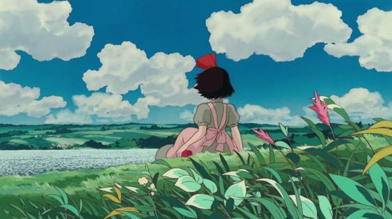
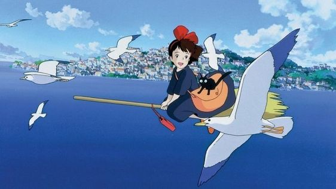
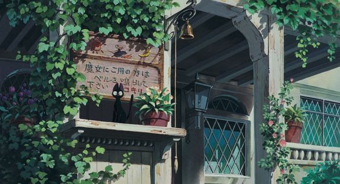
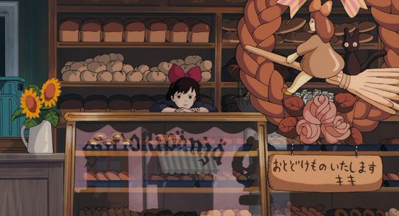
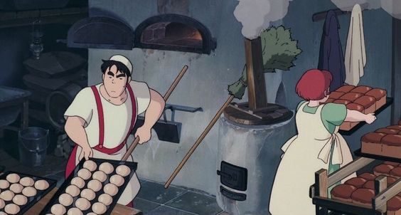

Kiki's Delivery Service
En este largometraje de anime, Kiki, una niña de 13 años, se traslada a un pueblo costero con su gato parlante, Jiji, para pasar un año sola, de acuerdo con la tradición de su pueblo para las brujas en formación. Tras aprender a controlar su escoba, Kiki crea un servicio de mensajería voladora y pronto se convierte en un miembro fijo de la comunidad. Pero cuando la insegura joven bruja empieza a cuestionarse a sí misma y pierde sus habilidades mágicas, debe superar sus dudas para recuperar sus poderes.
    